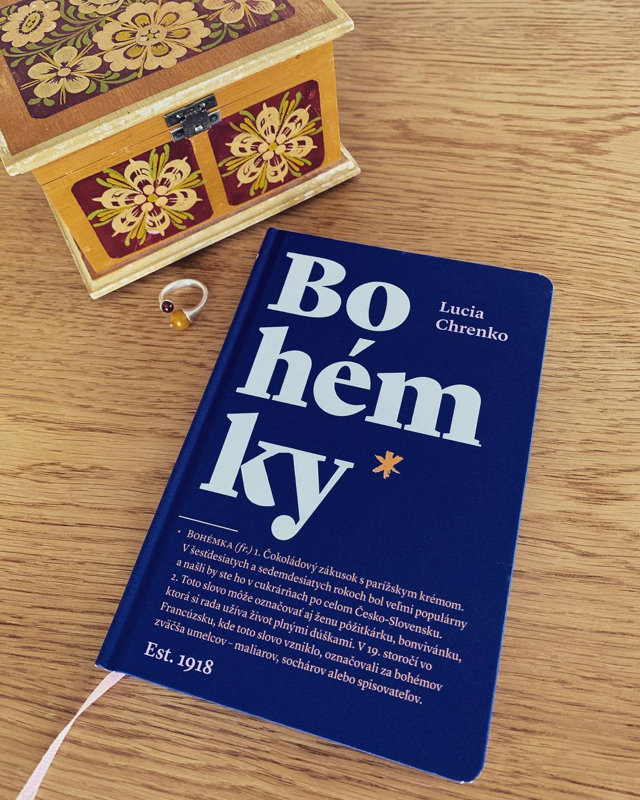

💛Bohemky💛. Tejto malej chutnej knihe s roznymi kratkymi temami som sa uspesne oblukom vyhybala, ani neviem preco, a az teraz sa ku mne silou osudu dostala. Uplne som sa v nej nasla a hltala som kazde jedno slovo. Milujem objavovat pribehy v pozadi, ako napriklad vznikli niektore sperky, dezerty, miesta ktore navstevovali umelci. Pred asi 2 rokmi som prepadla studovaniu niche parfumov a vsetky tieto temy boli obsiahnute v knihe. No jednoducho kniha usita pre mna na mieru. Ocitla som sa opat v ulickach Pariza a vychutnavala atmosferu, gastronomiu, lokal-patriotizmus a lietala v oblakoch tak ako kedysi, ked sa cast mojho zivota spajala s tymto mestom a krajinou. Dakujem spisovatelke Lucii Chrenko, ze mi takto na dialku poskytla ten davny pocit a imaginarne som sa tam vdaka nej opat ocitla a precitila vsetky pekne pocity 💛. #bohemky #luciachrenko #spomienky #radostzmalickosti #radostzozivota #savoirvivre #knihanaoddech #precitane #procteno #skczbookstagram #booklover #milujemknihy #fotímknihy #kniznarecenzia #knznirecenze #tipnaknihu #kniznytip #pezinskasova